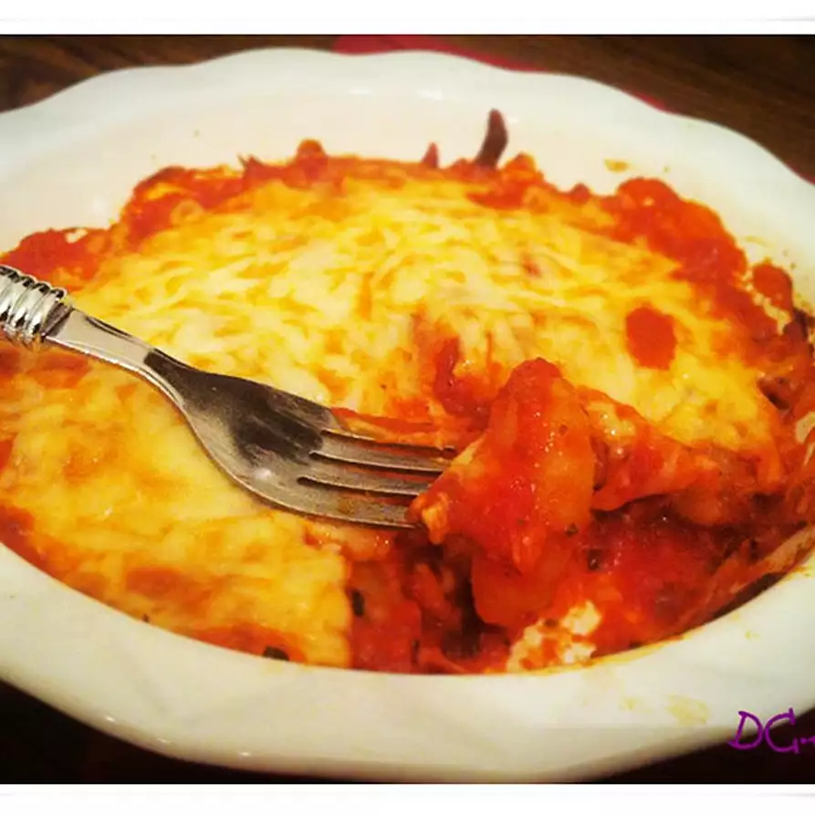

Gnocchi Recipe

This baked gnocchi is simple, fast, and delicious.
Gnocchi is the name for round dumplings made with flour and potatoes, or with semolina or yellow polenta flour. They are perhaps one of the most ancient homemade pastas made by cutting small pieces from the dough and cooking them in boiling water.
Ingredients
- 4 ounces shelf-stable gnocchi
- ⅓ cup pasta sauce
- ¼ cup shredded mozzarella cheese, or to taste
Steps
- Bring a large pot of lightly salted water to a boil. Cook gnocchi in the boiling water until they float to the top, about 3 minutes. Drain.
- Preheat the oven to 350 degrees F (175 degrees C).
- Spread 1/2 of the pasta sauce on the bottom of a 5-inch round casserole dish. Layer with gnocchi and spread the remaining pasta sauce on top. Sprinkle with mozzarella cheese.
- Bake in the preheated oven until cheese is melted and bubbling, about 25 minutes.